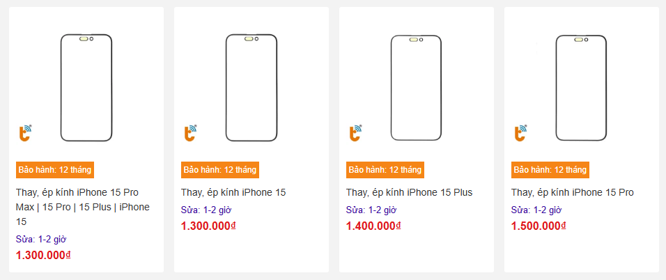

Ép Kính iPhone 15 Series - Dịch Vụ Uy Tín, Chất Lượng Tại TP.HCM
Chắc hẳn bạn đã từng cảm thấy khó chịu khi mặt kính chiếc iPhone 15 của mình bị nứt hay trầy xước, phải không? Đặc biệt là khi bạn sở hữu những siêu phẩm như iPhone 15, 15 Plus, 15 Pro, hay iPhone 15 Pro Max, việc mặt kính không còn lành lặn sẽ ảnh hưởng trực tiếp đến trải nghiệm sử dụng.
Thành Trung Mobile sẽ giúp bạn giải quyết vấn đề này với dịch vụ ép kính chất lượng, nhanh chóng, giá rẻ và bảo hành dài hạn. Chỉ trong một thời gian ngắn, chiếc iPhone của bạn sẽ lại đẹp như mới, thỏa sức trải nghiệm không gián đoạn.
1. Mặt Kính iPhone 15 Series Quan Trọng Như Thế Nào?
Những chiếc iPhone 15, từ iPhone 15, 15 Plus đến 15 Pro và 15 Pro Max, luôn toát lên vẻ đẹp sang trọng, tinh tế, và hiện đại. Mặt kính của chúng không chỉ bảo vệ màn hình mà còn là yếu tố quan trọng trong việc duy trì vẻ ngoài đẳng cấp của chiếc điện thoại. Khi mặt kính bị hư hỏng, cảm giác sang trọng, mượt mà khi sử dụng cũng “mất đi”. Thậm chí, trải nghiệm cảm ứng sẽ bị ảnh hưởng và làm giảm đi niềm vui khi sử dụng chiếc iPhone cao cấp này.
Chính vì vậy, việc thay mặt kính là cực kỳ quan trọng. Thành Trung Mobile cam kết sẽ mang đến cho bạn dịch vụ ép kính iPhone 15 chất lượng nhất, giúp bạn lấy lại cảm giác trải nghiệm như khi mới mua máy. Chúng tôi sử dụng mặt kính zin chính hãng, ép kính cực kỳ chuẩn, giúp màn hình của bạn lại trong suốt, cảm ứng mượt mà, hiển thị sắc nét.
2. Dấu Hiệu Cần Ép Lại Mặt Kính iPhone 15
Không phải lúc nào chiếc iPhone 15 của bạn cũng giữ được sự “đẹp như mới” sau một thời gian dài sử dụng. Khi mặt kính bắt đầu xuất hiện những dấu hiệu như vỡ, nứt, trầy xước, hay bị ám màu, đó chính là lúc bạn cần ép lại mặt kính. Những dấu hiệu này sẽ khiến chiếc iPhone của bạn mất đi vẻ sang trọng và trải nghiệm cảm ứng cũng bị ảnh hưởng không ít.
Thêm nữa, nếu bạn thay mặt kính kém chất lượng, máy sẽ mất tính thẩm mỹ, không khít với khung máy, hình ảnh hiển thị không còn sắc nét như ban đầu. Tại Thành Trung Mobile, bạn hoàn toàn yên tâm về chất lượng dịch vụ, với mặt kính zin và quy trình ép kính chuẩn xác, đảm bảo chiếc iPhone 15 của bạn trở lại nguyên vẹn như mới.
3. Khi Nào Cần Ép Lại Mặt Kính iPhone 15?
Để quyết định ép lại mặt kính, bạn cần chắc chắn rằng màn hình iPhone 15 của mình vẫn còn hoạt động ổn định. Các dấu hiệu như màn hình không bị sọc, điểm chết, hay đốm mực là điều kiện cần thiết để ép kính mà không làm giảm chất lượng hiển thị của máy. Bạn cũng cần đảm bảo rằng màn hình vẫn sáng rõ và không bị ám ố.
Ép kính là một lựa chọn tiết kiệm chi phí thay vì phải thay nguyên bộ màn hình. Quy trình ép kính tại Thành Trung Mobile chỉ mất khoảng 1-2 giờ, và bạn sẽ có thể lấy máy ngay lập tức. Đây là lựa chọn lý tưởng cho những ai muốn bảo vệ chiếc iPhone 15 mà không phải bỏ ra một khoản chi phí quá lớn.

4. Giá Ép Kính iPhone 15 Series
Chắc chắn bạn đang tò mò về giá dịch vụ ép kính iPhone 15, đúng không? Thành Trung Mobile cung cấp dịch vụ ép kính iPhone 15 với mức giá hợp lý, và chúng tôi cam kết rằng bạn sẽ không phải lo lắng về chi phí quá cao. Giá dịch vụ phụ thuộc vào dòng máy và tình trạng mặt kính của bạn. Dưới đây là bảng giá tham khảo:
Hãy liên hệ ngay để được báo giá chi tiết và nhận các chương trình khuyến mãi hấp dẫn của chúng tôi. Thành Trung Mobile luôn cam kết mang lại dịch vụ chất lượng, giá cả hợp lý và nhanh chóng!
5. Ép Kính Có Ảnh Hưởng Đến Màn Hình iPhone 15 Không?
Nếu bạn lo lắng rằng việc ép kính có thể ảnh hưởng đến màn hình iPhone 15 của mình, đừng lo! Mặt kính và màn hình là hai bộ phận riêng biệt, và ép kính đúng kỹ thuật sẽ không làm ảnh hưởng đến màn hình hoặc dữ liệu của bạn. Thành Trung Mobile chỉ sử dụng máy móc hiện đại và kỹ thuật viên chuyên nghiệp, nên bạn hoàn toàn yên tâm rằng màn hình và các tính năng khác của máy sẽ không bị hư hỏng.
6. Thời Gian Ép Kính Tại Thành Trung Mobile
Tại Thành Trung Mobile, thời gian ép kính cực kỳ nhanh chóng, chỉ từ 1-2 giờ là bạn đã có thể lấy ngay chiếc iPhone 15 của mình. Chúng tôi cam kết quy trình minh bạch, và bạn có thể xem trực tiếp quá trình ép kính từ các kỹ thuật viên. Đừng lo lắng về việc phải chờ đợi lâu, chúng tôi sẽ mang đến cho bạn trải nghiệm dịch vụ nhanh chóng và tiện lợi.
7. Thành Trung Mobile – Địa Chỉ Ép Kính Uy Tín Tại TP.HCM
Thành Trung Mobile là địa chỉ ép kính iPhone 15 uy tín tại TP.HCM, với nhiều ưu điểm nổi bật:
- Sử dụng mặt kính zin, ép kính đẹp như mới.
- Kính chất lượng cao, hiển thị sắc nét, cảm ứng mượt mà.
- Đội ngũ kỹ thuật viên giàu kinh nghiệm, thao tác cẩn thận.
- Quy trình chuyên nghiệp, bảo hành lâu dài.

Chúng tôi có các chi nhánh tại TP.HCM, thuận tiện cho bạn khi cần ép kính iPhone 15. Hãy đến với Thành Trung Mobile để tận hưởng dịch vụ chất lượng, nhanh chóng và giá cả hợp lý.
8. Quy Trình Ép Kính Tại Thành Trung Mobile
Quy trình ép kính tại Thành Trung Mobile được thực hiện nhanh chóng, minh bạch và dễ hiểu:
- Tiếp nhận máy và kiểm tra tình trạng mặt kính.
- Báo giá và thời gian lấy máy.
- Ép kính và kiểm tra lại tổng thể.
- Bàn giao máy, in phiếu bảo hành, hướng dẫn bảo quản.
9. Hướng Dẫn Bảo Quản Mặt Kính Sau Khi Ép
Để bảo vệ mặt kính sau khi ép, bạn cần lưu ý những điều sau:
- Dán cường lực và sử dụng ốp lưng bảo vệ.
- Tránh để máy trong môi trường nhiệt độ cao hoặc va đập mạnh.
- Không để máy gần các vật nhọn hoặc cứng có thể làm vỡ kính.
- Khi bỏ vào túi quần, hãy xoay màn hình vào trong để tránh va đập.
10. Liên Hệ Thành Trung Mobile Để Ép Kính iPhone 15
Hãy liên hệ ngay với Thành Trung Mobile để nhận dịch vụ ép kính iPhone 15 Series chất lượng, nhanh chóng và giá rẻ tại TP.HCM. Đặt lịch trước để được giảm giá 10% và hỗ trợ nhanh nhất!